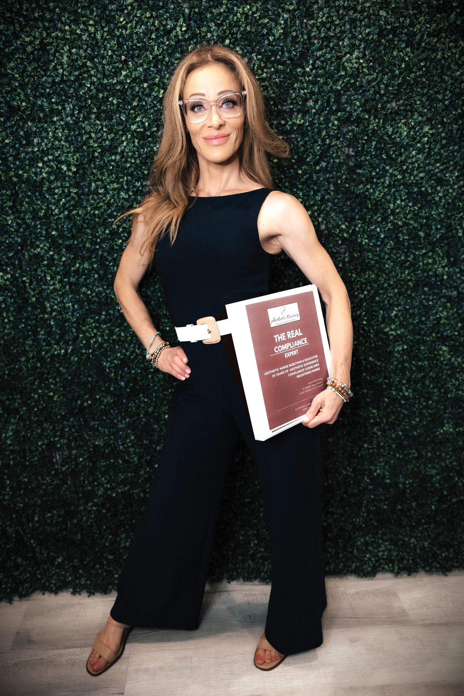

Compliance Assessment
Identify Gaps, Prioritize Risks and Receive a Practical Corrective Action Plan.
- Pre-Assessment Document Review
- Walkthrough With Owner & Medical Director
- Scored Gap Report
- Prioritized 30-Day Correction Plan
Protect Your License. Strengthen Your Practice.
Nurse-Led Compliance: Evidence-Based, State-Specific Practice Guidelines Customized to Your Practice, Plus Assessments and Ongoing Consulting for Med Spas and Licensed Providers.

Cindi Combines Clinical Experience, Compliance Education and Practical Policy Development to Help Providers Build More Defensible Practice Systems.
“After Facing My Own Licensing Issue, I Made It Right and Promised Myself I Would Help Others in This Field Do the Same.”
Three Clear Options. Start With an Assessment, Get Ongoing Consulting, or Build Your Custom Manual.
Identify Gaps, Prioritize Risks and Receive a Practical Corrective Action Plan.
Ongoing Support for Implementation, Staff Training, Competency Documentation and Practice Growth.
Tailored to Your Practice.
Most Practices Don’t Discover a Gap Until Someone Asks for the Records. By Then, the Documents Either Exist or They Don’t.
Patients, Coworkers and Others Can File a Complaint. According to the California Board of Registered Nursing, Allegations May Include Gross Negligence or Incompetence, Unprofessional Conduct and Unlicensed Activity.
When the Evidence Supports Discipline, the Board Files an Accusation: a Legal Document Listing Formal Charges, and a Public Record. Investigators Gather Patient Records and Personnel Records.
In Cindi’s Review of 32 Aesthetic Board Accusations, 22 Cited Missing or Insufficient Standardized Procedures, and 20 Ended in Three Years’ Probation.
Scope: 32 Publicly Filed Licensing Board Accusations Related to Aesthetics. Only 7 Involved Documented Patient Harm. One Case Can Count Toward More Than One Finding. Education Only, Not Legal Advice.
Read the Full Findings & Methodology →How to Check Whether a Vendor’s Testimonials Come From Real, Licensed Providers and Practices, and Why Generic SOP Templates Can’t Meet State-Specific Requirements Like California’s 16 CCR 1474.
The FDA Added a Warning Against Using Kybella Outside the Submental Area and New Risks of Nodules and Masses. Here Is What to Update in Your Protocols, Consent Forms and Aftercare.

Whether You’re Opening a Medical Spa, Reviewing Existing Policies, or Addressing Identified Compliance Concerns, Start With a Conversation About Your Practice’s Needs.